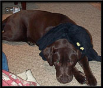
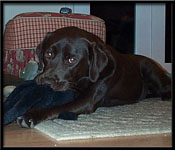
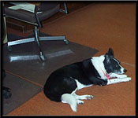
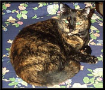
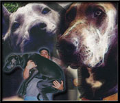
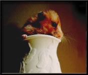
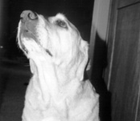
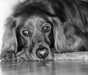
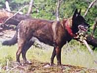

Mascots of Ethermoon Entertainment
|   | Farrah is a lovable, if clumsy, chocolate Lab. Farrah is a good sport about posing for photographs. Here you can see her playing with her favorite stuffed animal, a spider named Fido. She prepares for the coming of Strifeshadow by pretending that Fido is a dreaded Oak Spider, and she is a vicious Moag! |
| Dilling is an older model of the immensely popular and intelligent Border Collie. Called "Snip-Snap" by her friends, Dilling has amazingly fast jaws and a predisposition towards food defense. Among her other tricks, Dilling can perform a modified handstand using only her front paws. At nights, Dilling guards the Strifeshadow source code from potential thieves. |  |
|  | Pickle is 100% pure Feline. Orphaned at a young age, she is unsure of her precise heritage beyond that. Pickle has spent a great deal of time during Strifeshadow's development experimenting with different ambush techniques. Her two favorites are the "Jump on your head from behind and dig claws into your face while you are distracted by work" and the "Surprise room entrance through the chimney." |
| Shadow is a friendly, 106lb, Great Dane Doberman mix. She was the only "blue" in her litter and neither of her parents are "blue". Shadow has a white mark on her chest that is remarkably similar to the Japanese symbol for large. Well trained, Shadow can perform a variety of obedience, heel, and other commands... but the coolest is that she "speaks" with her deep bark. Shadow's contributions to Strifeshadow are to serve as an 106lb curl bar for YRM, and the difficulty (or strife) in training her helped to subconsciously inspire the name of the game. Rumor has it that she also posed for the Moor Moag animation. Shadow also helps to keep YRM's face and ears clean with generous licking, and gave Martin his first bath in months when he flew in to Pittsburgh for a visit. |  |
|  | Penny the hampster, who sadly passed on about a year and a half ago, was the apartment dwelling pet of YRM before he and his wife bought a house and moved to the suburbs. As large as Shadow is, Penny was small. Her main goal in life was to process seed into hampster debris, and to achieve that goal she ate, drank, slept 90% of the day, and ran in her wheel as soon as her human owners fell asleep. Penny's other purpose in life was to look cute, which she did admirably. It's a shame Penny died before she could have inspired a hampster powered resource system for the dark elves, but alas such a system was never to be. This picture shows Penny popping her head out of a candle holder for a picture after having been stuffed in there for just such a purpose. |
| Daisy is a geriatric 13 year old lab. With uncanny intellegence, and an english vocabulary of several hundred words, Daisy has perfected the art of being an "inside dog". She always knows when to strike the kitchen, and occasionally, when it suits her, follows verbal commands you wouldn't normally expect her to know. She is known to appear in inconvenient places such as where you are about to walk, where you just stepped, and where you were contemplating standing. With her bitter attitude and piercing disgruntled stare, Daisy is truly the driving force behind the more evil forces of Strifeshadow. |  |
|  | Chloe is a loveable 5 year old golden retriever. With her prestigious family heritage of field champions, she likes to flaunt her distinguished sense of smell and can often be found growling at vicious vacuum cleaners or furniture that has been moved. She also stalks both rubber chew toys, and the unfortunate gophers and squirrels that inhabit the yard. While not nearly as bright as Daisy, she makes it up with her generally pleasant nature, and hunter-killer abilities which are useful in stopping trespassing operatives of other game companies. When not engaging in those activities, Chloe is often found in interesting positions: posing on her back while stalking a favorite toy in her paws above her, sitting frumpily and to the side, and sometimes perched like the feline she would be if she wasnt so friendly. |
| No one knows exactly what Brewster is, but Wolfdog is about as close as you'll get. Brewster loves to practice her nursing skills on any sleeping in or near her house. Before she performs CPR on the unconscious, she first checks to make sure they are alert by prodding their head and face with her snout. She also has her own couch, but she is not spoiled. Brewster has little or no understanding of growth and still often attempts to sit on the window sill that fit her as a puppy. No, its not smart, but it is kind of cute. |  |
Strifeshadow, Ethermoon Entertainment and their respective logos are trademarks of Martin Snyder